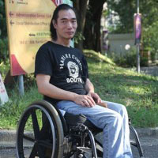

伸出援手
好人好市得以幫助有需要的人，有賴優秀的義工、合作夥伴及贊助人的支持。請即伸出援手，加入我們的工作吧！
捐款
好人好市的所有員工皆是義務無償工作的，主要的支出為聘請軟體工程公司，以不斷擴充及改善我們的服務。
商業合作夥伴
我們主要的 商業合作夥伴 提供資金及優質服務，對此我們非常感激。
我們邀請大型商業贊助商參與討論，制定策略及計劃，確保資金用得其所，確切用於好人好市的長遠發展。
假如商業機構贊助物資收集車輛，我們就會將其機構標誌印於貨車，以作宣傳之效。
請即 聯絡我們 ，查詢詳情。
提供義務服務
我們非常歡迎發展以下各方面的夥伴關係：
- 運輸及提取服務
- 專業物流服務（如硬件、諮詢等）
- 本地應用程式（ iOS, Android, Windows手機）發展
- 其他軟體發展：Ruby, Rails, Ember.js, Node.js及其他
- 市場發展及公共關係
申請成為常規義工
評估員： 只需要通過手機，你就能成為義工！
評估員利用閑餘時間，使用他們的手機來處理物資捐贈。無論你身在何處，每天只需幾分鐘，你就能成為義工！
- 雙語溝通，這樣就能處理中英文個案
- 須通過面試及半日訓練
- 每年須重新受訓
- 必須擁有可用數據流動的智能手機
慈善機構聯絡人： 每星期兩天義工服務
好人好市與香港非牟利機構合作，提供熱心人士捐贈的物資。負責聯絡慈善機構的義工協助非牟利機構登記好人好市服務，及熟習其運作模式。
- 須雙語溝通（中文及英文）
- 須具信心出外與和我們合作的慈善團體會面
- 必須願意定期工作（每星期兩天以上為最理想）
首先，你須在位於屯門的十字路會熟習你的義務工作。其後，大部分時間皆會用於探訪你負責協助的非牟利機構，和他們溝通。
